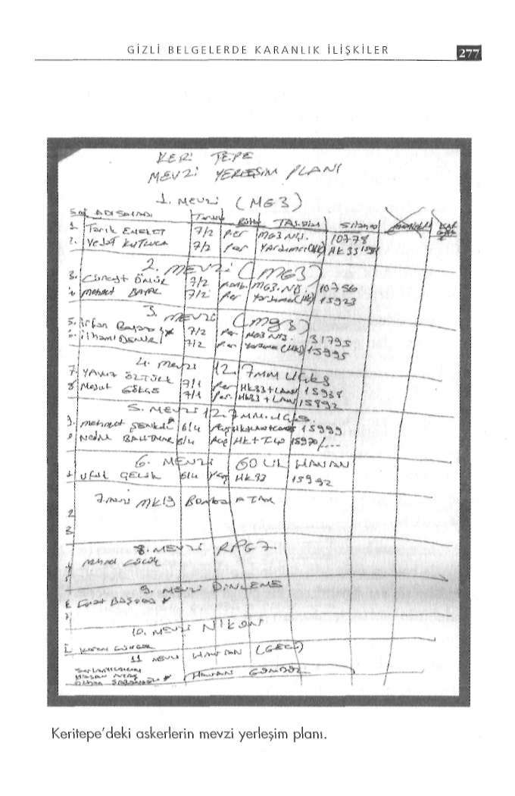

G İ Z L İ B E L G E L E R D E K A R A N L I K İ L İ Ş K İ L E R
faktör ise Dağlıca Tabur Komutanı Kurmay Yarbay Onur DiSoru işaretleri
rik'in bu erle ilgili ifadeleriydi.
İddianame ortalığa dökülüp dava süreci yaklaştıkça hem Dağ
Dirik'in 24 Kasım 2006 günü verdiği ifadenin yer aldığı 8 erlıca Komutanı Onur Dirik hem yargılanan askerlerin ifadeleri le ilgili dava iddianamesi, 12 Ocak 2008 günü bazı haber ajansmedyada geniş bir şekilde yer aldı. Erlerin ifadesi ise yarbayın ifaları tarafından servise konduğunda, kamuoyu Dağlıca baskınıyla desinin aksine çok ağır iddialar içeriyordu. Üstelik, er Ramazan ilgili detayların bu kadar ürkütücü olduğunu sanmıyordu.
Yüce'nin avukatları Zeki Yüksel ve Dinçel Arslan, Yarbay Onur Bir gün sonra, 13 Ocak'ta Dağlıca'da şehit düşen uzman ça
Dirik başta olmak üzere Dağlıca komutanları hakkında suç duyurusunda bulundu. Bu dilekçede şunlar vardı: vuş Selçuk Gürdal'ın ikizi Celalettin Gürdal, aradı. Tevizyonlar-da Dirik'in ifadelerini izleyince dayanamayıp Dağlıca'yı aradığı
- Baskına uğrayan mevzide kaydedilen, PKK'lılara ait telsiz nı söyledi.
konuşmaları, yaklaşık 3 saat mesafedeki tabura korucular tarafından taşındı.
Kendisini şehit kardeşi olarak tanıtınca Dirik'e bağlamışlar.
Şehit ikizi, söze sitem ederek başlamış: 'Sayın komutanım, daha
- Saldırı öncesi ve sırasında korucular PKK'lılarla hareket et
önce sizinle konuştuğumda bu 8 askerle ilgili şüphelerimi söyleti. Telsiz konuşmaları ile PKK'lılarla koruyucuların bağlantısı diğimde siz bana kızıp bu askerlerin kahramanca çatıştığını söyaçık bir şekilde saptandı. Tabur içinde ve üs bölgesinde rahatlıkla hareket edebilen korucular, bir telsiz konuşmasının kodlarını lemiştiniz. Şimdi neden böyle konuşuyorsunuz?'
4 gün süreyle kaybedip, bulduktan sonra getirdi. Buna rağmen Gürdal, komutanın cevabını ise şöyle aktardı: 'Böyle konuiddianamede koruyucularla ilgili bu konulara hiç değinilmedi.
şunca 'Sen kimsin lan?' diye sordu. 'Benim senin gibi adamlarla
- Ramazan Yüce, 12 Haziran'da saldırı için 'Suya gidiyoruz'
konuşacak bir şeyim yok' diyerek telefonu yüzüme kapattı.'
ifadesini kullanan teröristlerin, 20 Ekim'de yine aynı ifadeyi kul
Zihnim, telefon tartışmasını doğuran soruya takıldı haliyle.
landığını telsizden saptadı ve bunu üstlerine bildirdi, ancak rüt
Komutanla daha önce ne zaman görüşmüştü?
beliler, 'Bir şey olmaz' yanıtıyla önlem almadılar.
Gürdal şöyle dedi: 'Kardeşimin şehit düştüğü olayın üzerin
- Hakim tepelerdeki 24 mevzide sadece 8 asker bulunduğunden 40-50 gün geçmişti. Bölük komutanını aradım, o da tabur dan, uçaksavar ve MK19 silahları, teröristlere karşı kullanılamadı.
komutanına söylemiş. Bana döndü. Yargılanan 8 askerle ilgili
- Saldırı akşamı, Üsteğmen Çağdaş Cücünoğlu, askerlere, ta
şüphelerimi anlattım. Bana o zaman, 'Sen o askerlerin hangi bur komutanı düğünde olduğu için kendisine ulaşamadıklarını, şartlarda görev yaptığını biliyor musun? Bilmeden nasıl böyle bu nedenle çok dikkatli olunması gerektiğini söyledi.
konuşursun? Benim tüm askerlerim kahramanca orada savaştı.
- Olaydan önce, dinleme ve kestirme cihazındaki ses kayıtla
Giden askerlerin kafasına silah dayayıp zorla götürülmediklerini rı ile termal kamera görüntülerinden saldırı olabileceği anlaşıldınereden biliyorsun?"
ğı halde, gerekli önlemler alınmadı.
Gürdal haklıydı. Aradan geçen sürede ne değişti de savunur
- Dağlıca Tabur Komutanlığından gelen belgelere göre, salken suçlar hale gelindi?
dırının meydana geldiği Keri Tepe Üs Bölgesi'nde bir astsubay dışında sadece er ve erbaşlar görevliydi. Meri Tepe Üs Bölgesi'nde ise sadece iki rütbeli vardı.

G İ Z L İ B E L G E L E R D E K A R A N L I K İ L İ Ş K İ L E R